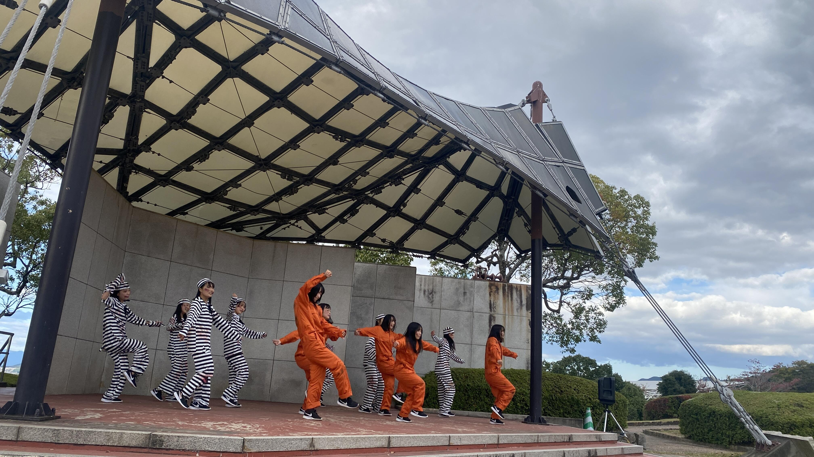

- ＨＯＭＥ
- >
- 部活動
- >
- ダンス
- >
- ダンス部ＴＯＰＩＣＳ
ダンス部 バトル大会への挑戦
ダンスバトルとは、DJが選曲した音楽に合わせて即興で踊る競技で、選手たちはその場で曲のイメージを素早くつかみ、表現する力が求められます。自由に踊ることこそがバトルの魅力であり、チームメンバーたちは普段の練習を通じて、その楽しさを深く体感してきました。
初めはフリー（即興ダンス）に自信がなかった部員も多かったですが、仲間と一緒に楽しく切磋琢磨するうちに、個々の表現力が飛躍的に向上しました。自分らしさを存分に発揮できるようになり、バトルの舞台でもその成長を感じさせてくれる場面が多く見られました。楽しみながら努力することができるこの９人だからこそ、このメンバーの前でなら思い切り楽しんで自分を表現できる、という日々の練習の中での心の安心がすべてに繋がったと考えています。
そして、第9回高校生ダンスバトル選手権 関西予選では、「diaster」が見事に勝ち進み、2025年1月18日（土）に川崎CLUB CITTA'で行われた決勝に出場しました。決勝の舞台に立つことができたのは、日々の努力とチームの団結力が実を結んだ証です。応援してくださった皆様の支えにも感謝の気持ちでいっぱいです。
この過程を通して、チーム全員が大きく成長し、技術だけでなく、お互いを支え合う絆も強まりました。大会を通じて新たな発見があり、次のステップに向けての意欲も高まっています。これからもさらなるレベルアップを目指し、新たな挑戦に立ち向かっていきます。
応援してくださる皆様に感謝の気持ちを込めて、引き続き応援をよろしくお願いいたします！次の大会でも、これまで以上に素晴らしいパフォーマンスをお見せできるように頑張ります。


ダンス部 第15回日本高校ダンス部選手権 冬の公式大会西日本大会
2022年12月27日(火)にメイシアターにて、第15回日本高校ダンス部選手権 冬の公式大会西日本大会が開催されました。
本校ダンス部からは、２年生女子３名「深夜０時の４steper」と、２年生男子３名「おちゃのこ彩仔」が出場しました。
たくさんの部員が応援にきてくれました。
ダンス部 全国青春ダンスカップ出演
12月４日(日)、本校ダンス部がABEMA TV放送「GENERATIONS 24時間テレビ24時間いろんなライブできるかなぁ？」内の企画「全国青春ダンスカップ」に出演しました。
GENERATIONSの楽曲「REVOLVER」での作品を披露しました。
参加メンバーを決めるためのオーディションから1か月、短い期間でしたが練習期間も含め、素敵な思い出になりました。

ひとつになろう！ダンスONEプロジェクト'22への参加
日本テレビ放送「スッキリ」の企画、「ひとつになろう！ダンスONEプロジェクト'22～全国高校生ダンス部応援企画～」に参加しました。
３年生が引退してから、初めて１、２年生のみで作り上げた作品です。
第45回京都府民総合体育大会オープニングフェスティバル出演
10月30日（日）に京都府立山城総合運動公園にて、第45回京都府民総合体育大会オープニングフェスティバルに出演しました。
前日のリハーサルの様子
公演の様子

第15回日本高校ダンス部選手権結果報告
７月29日（金）にロームシアター京都で開催された、第15回日本高校ダンス部選手権京滋・北陸大会においてスモールクラスにて優勝、ビッグクラスにて準優勝を収め、両クラス共に全国大会へ出場しました。
また、８月17日（水）、18日（木）に東京ガーデンシアターで開催された第15回日本高校ダンス部選手権夏の公式全国大会ではスモールクラスにて審査員特別賞を受賞しました。
スモールクラス
ビッグクラス
ダンス部 練習風景
夏の大会まであと少し、部員たちは今日も一生懸命頑張っています。

６月からフロアで練習することができるようになり、練習の幅が広がりました。
フロアが届いた記念に
初フロア練習！

片付けは大変そうです。

ダンス部１年生
１年生に部活着が届きました！
憧れの部活着に１年生はすごく嬉しそうでした。
いつも練習を引っ張ってくれている２年生と

準備体操しているところを上から

今日は、夏の大会に向けた練習を少しだけ見学しました。
１年生達は熱心に先輩たちの姿を見ていました。
みんなの１年後が楽しみです。

ダンス部 新入生

カテゴリ一覧
主要リンク